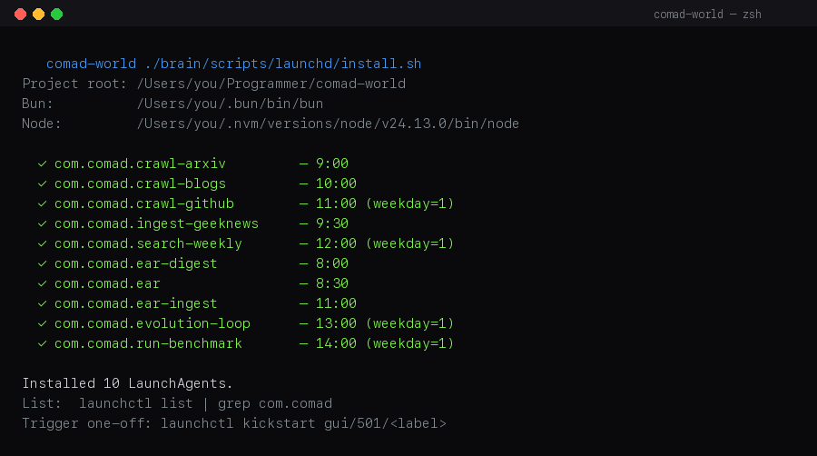
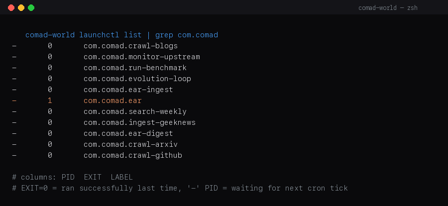
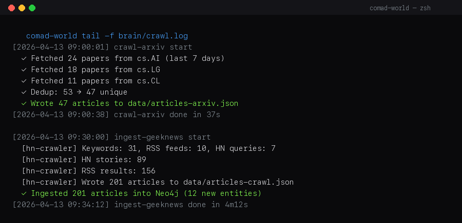

스케줄러 Scheduler
크롤러 · 다이제스트 · 벤치마크 · 자가진화 루프 등 10개 자동 작업의 스케줄을 OS별 최적 방식으로 등록합니다. 단일 명령으로 macOS / Linux / Windows 모두 처리됩니다.
문제와 배경
Comad는 여러 자동 작업이 claude -p를 호출합니다 (엔티티 추출, synth, 답변 생성). 이 CLI는 Claude Max 구독의 OAuth 토큰을 사용자의 세션 keychain에서 읽습니다.
macOS에서 전통적인 crontab은 Aqua(GUI) 세션 밖에서 실행되므로 keychain 잠금 해제가 되지 않아 claude -p가 exit 1로 조용히 실패합니다. 로그에는 ⚠ 표시만 남고, 결과적으로 노드 추가가 0건인 크롤이 반복됩니다.
크롤러가 매일 실행되는 것처럼 보이지만 그래프 노드 수가 거의 늘지 않음 · 벤치마크가 recall 8%로 기록됨 ·
"⚠ claude -p exited with code 1"이 로그에 반복.
OS별로 다음 스케줄러는 이 문제를 피합니다:
- macOS LaunchAgents (
gui/<uid>도메인) — GUI 세션을 상속받아 keychain 접근 가능 - Linux cron — 세션 keychain이 자연스럽게 전파 (macOS 문제 없음)
- Windows Task Scheduler —
LogonType=Interactive모드로 등록하면 로그인 중에만 실행되어 DPAPI/OAuth 보존
모두 기존 Claude Max 구독만으로 동작합니다. 추가 API 키를 발급받을 필요가 없습니다.
설치
리포 루트에서 단일 명령만 실행하면 됩니다. 내부에서 uname 또는 환경 변수로 OS를 감지해 올바른 설치 스크립트로 라우팅됩니다.
# macOS / Linux / WSL
zsh brain/scripts/schedule-install.sh# Windows (관리자 PowerShell)
pwsh -File brain\scripts\win-install.ps1
macOS — LaunchAgents
~/Library/LaunchAgents/com.comad.*.plist 10개가 생성되고 launchctl bootstrap gui/$(id -u)로 즉시 활성화됩니다. 스크립트는 idempotent — 여러 번 실행해도 안전합니다.
직접 확인
# 활성 목록
launchctl list | grep com.comad
# 단일 작업 수동 실행
launchctl kickstart gui/$(id -u)/com.comad.ear-digest
# 상세 상태 (마지막 종료 코드 포함)
launchctl print gui/$(id -u)/com.comad.ear-digest
launchctl list | grep com.comad — PID 컬럼이 '-'면 다음 cron 틱 대기 중, 숫자가 보이면 현재 실행 중.Linux · WSL — cron
스크립트가 crontab -l에 10개 엔트리를 추가합니다. WSL은 /proc/version의 "microsoft" 시그니처로 자동 감지되어 Linux 경로를 탑니다.
# 등록 결과 확인
crontab -l | grep comad-world
# 실행 로그
tail -f brain/crawl.logWindows — Task Scheduler
win-install.ps1은 Register-ScheduledTask로 \Comad\ 경로 아래 10개 작업을 만듭니다. 각 작업은:
Principal: LogonType=Interactive— 로그인 세션에서만 실행cmd.exe /c "bun.exe" run ... *>> log형태로 stdout/stderr 기록- 데일리는
Daily트리거, 주간은 월요일Weekly트리거
# 확인
Get-ScheduledTask -TaskPath '\Comad\*' | Format-Table TaskName,State
# 단일 실행
Start-ScheduledTask -TaskName EarDigest -TaskPath '\Comad\'등록되는 10개 작업
| 이름 | 시각 | 주기 | 역할 |
|---|---|---|---|
ear-ingest | 07:00 | 매일 | 어제 필독 기사 → /search 자동 피드 |
ear-digest | 08:00 | 매일 | 어제 기사들 HTML 다이제스트 생성 |
crawl-arxiv | 09:00 | 매일 | arXiv 논문 크롤 + 인제스트 (limit 200) |
ingest-geeknews | 09:30 | 매일 | GeekNews 아카이브 → Brain |
crawl-blogs | 10:00 | 매일 | 25 RSS 블로그 + HN 크롤 |
crawl-github | 11:00 | 월요일 | GitHub 트렌딩 레포 크롤 |
monitor-upstream | 11:30 | 월요일 | 업스트림 레포 업데이트 감지 |
search-weekly | 12:00 | 월요일 | PUSH 모드 자가 진단 검색 |
evolution-loop | 12:30 | 월요일 | Brain trends → Search → adoption |
run-benchmark | 13:00 | 월요일 | GraphRAG 50문항 벤치마크 |
운영 · 디버깅
로그 파일
brain/crawl.log— 크롤러, ingest, search, benchmark 모두 여기로ear/digest.log— 다이제스트만 분리brain/evolution-loop.log— evolution-loop 상세brain/upstream-monitor.log— upstream 감지 결과
실패하면 먼저 볼 것
- keychain 잠금 여부: macOS 잠자기 후 키체인 잠기면 다시 로그인해서 unlock
- Bun/Node 경로:
launchctl print로EnvironmentVariables.PATH확인 - Neo4j 실행 중인지:
docker ps | grep neo4j - cron 잔여 엔트리: macOS에서 이전 cron이 살아있으면 중복 실행.
# MIGRATED_TO_LAUNCHD:주석 확인

tail -f brain/crawl.log — arXiv·HN·GeekNews 잡이 순차로 실행되며 결과를 한 파일에 누적합니다.제거
# macOS
zsh brain/scripts/launchd/uninstall.sh
# Linux
crontab -l | grep -v comad-world | crontab -
# Windows
pwsh -File brain\scripts\win-install.ps1 -Uninstall# MIGRATED_TO_LAUNCHD: 주석으로 보존되어 있습니다. 롤백하려면 crontab -e에서 해당 줄의 주석만 제거하면 됩니다.
관련 파일: brain/scripts/schedule-install.sh, brain/scripts/launchd/, brain/scripts/cron-install.sh, brain/scripts/win-install.ps1